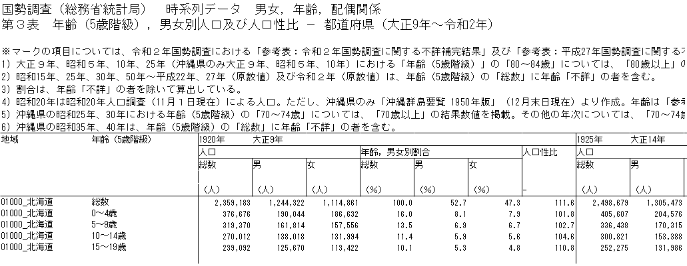
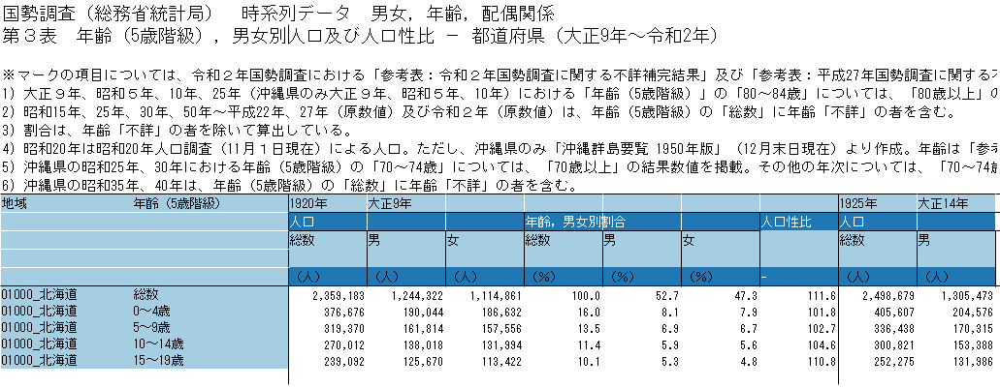

この記事はR言語 Advent Calendar 2024の23日目の記事です．
データ分析において，面倒だけれどもやらなくては始まらないのがデータの前処理です．最近では，機械判読しやすいデータ作成を心掛けることが重視されるようになってきていますが， 人と機械の両方にとって読みやすいデータ形式を作成することはそもそも容易ではありません．
そこで，この記事では，人が見ることを前提に作成されることの多いExcelファイルを Rで整形する際のTipsを紹介します．この記事では，主にExcelファイル向けのTipsを紹介しますが，CSVファイル等のデータ形式にも応用できると思います．
Excelファイルを整形するアプローチには主に以下の2つがあります． この記事では，Excelファイルのテーブル構造の読み解き方を紹介した後に， 以下の2つのアプローチによるデータ整形の方法を紹介します．
- readxlパッケージを使う方法
- tidyxlパッケージとunpivotrパッケージを使う方法
また，Excelファイルのデータ整形については，すでにいくつかの日本語記事がありますので， 以下の記事も参考になると思います．
Excelファイルを整形する前に
本題に入る前に，一点注意しておきたいことがあります． それは，分析に使用したいデータがさらに機械判読に適したデータ形式で提供されていないかを確認することです．
Excelファイルはデータ閲覧には便利ですが，機械判読しにくいデータ形式であることが多いです． そのため，他の形式でもっと機械判読しやすいデータが提供されていないかを確認しておいたほうが良いでしょう． たとえば，政府統計の総合窓口のe-Statでは，API機能を通じて，一般的なExcelファイルより機械判読しやすいデータを入手できることがあります．
データ形式を巡る「人と機械の溝」
私たちにとって読みやすいデータが機械にとっても読みやすいとは限りません． そういったデータの典型的な例として，週間天気予報のデータが挙げられます．
たとえば，以下のようなダミーの週間天気予報があるとしましょう． このようなデータを見たとき，すぐに「地域・日付別の天気」であることがわかると思います． しかし，機械的に以下のようなことを理解することは意外に難しいと思われます．
- 2列目以降の列名が日付を表していること
- 2列目以降の列の値が天気を表していること
コード
library(tidyverse)
region <- c("札幌", "東京", "名古屋", "大阪", "福岡", "那覇")
date <- seq(ymd("2024-12-20"), ymd("2024-12-26"),
by = "day") |>
format("%m/%d")
weather <- c("🌞", "⛅", "☔")
set.seed(1234)
weather_forecast <- expand_grid(region = region,
date = date) |>
mutate(weather = sample(weather, n(),
replace = TRUE))
weather_forecast_wider <- weather_forecast |>
pivot_wider(names_from = date,
values_from = weather)
weather_forecast_wider
上のデータが「地域・日付別の天気」であることを明確にするためには，以下のようなデータのほうが適しています． 以下のデータでは，軸（次元）である地域・日付に，観測値である天気が列名と対応しており，こうした縦長のデータはtidy data（整然データ）と呼ばれています． しかし，このような縦長のデータがニュースで流れたら，多くの人は読みづらいと感じるでしょう（週間天気予報を確認するのに縦長のテレビが必要になってしまいますね）．
なぜ，このような「人と機械の溝」が生じるのでしょうか？それは，多くの人が2次元でデータを捉えることに慣れていることが一因かもしれません．
以下の図は，上の縦長データをggplot2で散布図として表したものです．この散布図をはじめに示した表と見比べると同じような見た目になっていることがわかります．私たちにとっては，以下の散布図のように縦方向だけでなく横方向にも軸を持つ表のほうが見やすいのかもしれません．
weather_forecast |>
ggplot(aes(date, region,
label = weather)) +
geom_text() +
scale_x_discrete(position = "top") +
scale_y_discrete(limits = rev)
Excelファイルのテーブル構造を読み解く
このような「人と機械の溝」を踏まえて，実際のExcelファイルのテーブル構造を読み解いてみましょう．
「地域・日付別の天気」のようなシンプルな事例であれば，テーブル構造はそこまで難しくなりませんが，たとえば，「西暦・地域・性別・年齢別の人口」のようなデータの場合はどうでしょうか？ 実際に，e-Statに公開されているこちらのExcelファイルを見てみましょう． 以下の画像はExcelファイルの上部を一部抜粋したものです．

データ上部の説明を無視すると，以下のようなデータ形式であることがわかります．そのため，データの軸（次元）にあたる西暦・地域・性別・年齢を水色（■），観測値の種別・単位にあたる人口・人口割合・人口性比を青色（■）で塗りつぶすと以下の図のようになります．データ形式の詳細をまとめると以下のようになります．
- 1・2列目に，それぞれ地域・年齢階級の軸（次元）の情報が格納されている
- 3列目以降の列名にあたる部分には，軸（次元）と観測値の情報が混在している
- 1・3行目に，それぞれ西暦・性別の軸（次元）の情報が格納されている
- 2・4行目は，それぞれ人口・人口割合・人口性比の観測値の種別と単位が記載されている

Excelファイルを整形する際には，以下の点を意識しなければならないことがわかります．
- 列名が複数行にまたがって記載されている際には，各行が軸（次元）・観測値のどちらに対応するかを事前に整理しておく必要がある
- 列名の反復を避けるために一部の列名が省略 or セルが結合されていることが多い
readxlでExcelファイルを整形してみよう
それでは，実際にExcelファイルを整形してみましょう．以下では，上で紹介した「西暦・地域・性別・年齢別の人口」のExcelファイルを整形するためのコードを示します．
Excelファイルを読み込むのに役立つパッケージとして，readxlパッケージがあります． ここでは，readxlパッケージを使ってExcelファイルを整形するため， 事前に，readxlパッケージとtidyverseパッケージをロードしておきます．
# 必要に応じてパッケージをインストールしてください
# install.packages("pak")
# pak::pak("readxl")
# pak::pak("tidyverse")
library(readxl)
library(tidyverse)
データダウンロード時の使用コードはこちら
library(fs)
exdir <- "tips-tidying-excel-data-with-r"
dir_create(exdir)
destfile <- path(exdir, "population_by_year_sex_age_class",
ext = "xlsx")
if (!file_exists(destfile)) {
curl::curl_download("https://www.e-stat.go.jp/stat-search/file-download?statInfId=000001085927&fileKind=0",
destfile = destfile)
}
①列名の読み込み・結合セル等の処理
Excelファイルの読み込みの最初のステップとして，列名を読み込みます． CSVファイル等のテーブルデータでは，1行目に列名が記載されていることが多く， Rのデータフレームでも列名は文字列ベクトルで表されます．
しかし，上で示したExcelファイルでは，3列目以降に複数行にまたがって列名が記載されているため， これらをデータフレームの列名として使えるようにするには工夫が必要です．
そこで，まずreadxlのread_excel()関数を使って列名を読み込みます． read_excel()関数では，col_types引数の指定方法等に違いはあるものの，おおよそreadrのread_csv()関数と同様の書き方でExcelファイルを読み込むことができます．
3列目以降の列名では，横方向に軸（次元）や観測値の情報が格納されているため， t()関数で転置してからデータフレームに変換します． さらに，最初の2行（地域・年齢階級）を除外すると以下のようなデータを取得できます．
# 事前にダウンロードしたExcelファイルの保存場所
file <- "tips-tidying-excel-file-with-r/population_by_year_sex_age_class.xlsx"
sheet <- "da03"
data_col_names <- read_excel(file,
sheet = sheet, # シート名
skip = 10, # 説明部分をスキップ
n_max = 5, # 列名部分のみを読み込む
col_names = FALSE,
col_types = "text",
.name_repair = "minimal") |>
# 転置してからデータフレームに変換
t() |>
as_tibble(.name_repair = ~c("year", "value_type", "sex", "", "value_unit")) |>
select(year, value_type, sex, value_unit) |>
# 最初の2行（地域・年齢階級）を除外
slice_tail(n = -2)
head(data_col_names, n = 10)
data_col_namesを見ると，以下のことがわかります．
year列には，西暦と和暦が混在しているyear・value_type列では，列名の重複を避けるため一部の列名が省略されNAとなっている
そこで，以下のコードでは主に以下のような処理を行っています．
year列から西暦の年数のみを抽出- tidyrの
fill()関数を用いてyear・value_type列のNAを埋める
以上の作業により列名を作成するための準備が整いました．
data_col_names <- data_col_names |>
# 西暦の年数のみを抽出
mutate(year = year |>
str_extract("^\\d+(?=年$)") |>
as.integer(),
# value_unitが"-"の場合は空文字に置換
value_unit = if_else(value_unit == "-",
"",
value_unit)) |>
# 西暦年とvalue_typeのNAを埋める
fill(year, value_type)
head(data_col_names, n = 10)
②列名の作成・データの読み込み
それでは，data_col_namesを使って列名を作成しましょう． ここでは，以下のような手順で列名を作成しました．
- まず，
value_type・value_unit列を結合し，value_type列を作成
- 次に，
year・sex・value_type列の順に"/"区切りで結合し，col_name列を作成
- 最後に，
"region"・"age_class"・col_name列のデータを結合し，列名を作成
以下のコードでは，データフレームの列名の結合にtidyrのunite()関数を使っています． 以上の作業により，データの読み込みに必要となる列名が作成されました．
col_names <- data_col_names |>
unite("value_type", value_type, value_unit,
sep = "") |>
unite("col_name", year, sex, value_type,
sep = "/") |>
pull(col_name)
col_names <- c("region", "age_class", col_names)
head(col_names, n = 10)
[1] "region" "age_class"
[3] "1920/総数/人口（人）" "1920/男/人口（人）"
[5] "1920/女/人口（人）" "1920/総数/年齢，男女別割合（％）"
[7] "1920/男/年齢，男女別割合（％）" "1920/女/年齢，男女別割合（％）"
[9] "1920/NA/人口性比" "1925/総数/人口（人）"
col_namesを使ってデータを読み込んでみましょう． read_excel()関数にcol_names = col_namesとして列名を指定することで，先ほど作成した列名を使ってデータを読み込むことができます．
data <- read_excel(file,
sheet = sheet,
skip = 10 + 5,
col_names = col_names,
col_types = "text",
.name_repair = "minimal") |>
# 末尾の列に重複がみられるため重複箇所を削除 (元データ作成時のミスと思われる)
select(all_of(vctrs::vec_unique_loc(col_names)))
head(data, n = 10)
③tidy dataへの変換
最後に，データを整形し，tidy data（整然データ）に変換しましょう． tidy dataは通常，縦長のデータになることが多いため，tidyrのpivot_longer()関数が便利です． pivot_longer()関数では，names_sep引数を用いることで，列名に含まれる複数の情報を列方向に展開することができます．
今回のExcelファイルでは，軸（次元）にあたる地域・年齢階級以外の西暦・性別が列名に含まれているため，names_sep = "/"引数を使ってこれらを展開します． さらに，西暦・性別は，それぞれ"/"で区切られた部分の1・2番目に格納されているため，names_to引数の1・2番目にそれぞれ"year"・"sex"を指定します．
さらに，"/"で区切られた部分の3番目にあたる人口（人）・年齢，男女別割合（％）・人口性比は観測値にあたるため， 今回のケースでは，これらを列方向に展開せず列名として残しておきたいです． これは，pivot_longer()関数のnames_to引数の3番目に".value"を指定することで実現できます．
したがって，以下のようなコードにより，データを縦長データに変換することができます．
data <- data |>
pivot_longer(!c(region, age_class),
names_to = c("year", "sex", ".value"),
names_sep = "/",
names_transform = list(sex = \(x) x |>
na_if("NA"))) |>
# 人口・人口割合・人口性比の列を数値に変換
mutate(across(c(`人口（人）`, `年齢，男女別割合（％）`, 人口性比),
\(x) {
parse_number(x,
na = "-")
})) |>
relocate(year, region, sex, age_class)
head(data, n = 10)
dataを見ると，人口性比の性別sexの列が常にNAとなっていることがわかります． そこで，以下のコードでは，人口（人）・年齢，男女別割合（％）を含むdata_populationと人口性比を含むdata_sex_ratioにdataを分割しています． こうすることで，各データの意味がさらに明確になります．
data_population <- data |>
drop_na(sex) |>
select(!人口性比)
head(data_population, n = 5)
data_sex_ratio <- data |>
filter(is.na(sex)) |>
select(!c(sex, `人口（人）`, `年齢，男女別割合（％）`))
head(data_sex_ratio, n = 5)
tidyxlとunpivotrでExcelファイルを整形してみよう
次に，tidyxlパッケージとunpivotrパッケージを使ってExcelファイルを整形する方法を紹介します．
readxlパッケージでは，列名の作成・データの読み込み・tidy dataへの変換という多くのステップを踏む必要がありました． tidyxlパッケージとunpivotrパッケージでは，Excelファイルのテーブルを「行・列別の値」に展開した縦長データを用いることで， readxlよりも柔軟かつ効率的にデータ整形を行うことができます．
まずは，必要となるパッケージをロードしておきましょう．
# 必要に応じてパッケージをインストールしてください
# install.packages("pak")
# pak::pak("tidyxl")
# pak::pak("unpivotr")
# pak::pak("tidyverse")
library(tidyxl)
library(unpivotr)
library(tidyverse)
①Excelファイルの読み込み
tidyxlパッケージのxlsx_cells()関数を使ってExcelファイルを読み込みます． この関数により，Excelファイルのセル情報を行・列別に取得することができます．
cells <- xlsx_cells(file,
sheets = sheet)
head(cells, n = 10)
読み込んだcellsに対して，unpivotrパッケージのbehead()関数を適用することで，データに軸（次元）の情報を追加することができます． 具体的には，軸（次元）の情報がデータから見てどの方向directionにあるかを指定することで情報を追加します． 特に，direction = "up-left"等を指定することで空白セルや結合セルの対応が可能になり，とても便利です．
behead()関数を使うには，事前にテーブル構造を読み解いておく必要があります．データに対する方向directionの詳しい指定方法については，以下が参考になります．
以下のコードでは，上で整理したテーブル構造に基づき，readxlで作成したdataと同様の情報を持つdata2を作成しています． readxlを用いた場合と比べて少ないコードでデータの読み込めたことがわかります．
data2 <- cells |>
# 説明部分にあたる最初の10行を除外
filter(row > 10) |>
# 1列目の列は地域を表す (データから見てleft側)
behead("left", region) |>
# 2列目の列は年齢階級を表す (データから見てleft側)
behead("left", age_class) |>
# 1行目の行は西暦を表す (データから見てup-left側)
filter(row != 10 + 1 | str_detect(character, "^\\d+年$")) |> # 和暦を削除
behead("up-left", year) |>
# 2行目の行は値の種別を表す (データから見てup-left側)
behead("up-left", value_type) |>
# 3行目の行は性別を表す (データから見てup側)
behead("up", sex) |>
# 5行目の行は単位を表す (データから見てup側)
behead("up", .) |> # 4行目の空白の行に適当な名前を付与 (後で削除)
behead("up", value_unit) |>
select(year, region, age_class, sex, value_type, value_unit, numeric)
head(data2, n = 5)
②tidy dataへの変換
新たに作成したdata2は縦長データではあるものの，値の種別value_type（人口，年齢・男女別割合や人口性比）が列方向に展開されており，必ずしもデータ分析に適した形式とは言えません．
そこで，tidyrのpivot_wider()関数を使って，値の種別value_typeを行方向に展開します． 以下のコードでは，value_type列とvalue_unit列を結合したのち横長データに変換しています． これによりreadxlを使って作成したdataとほぼ同等のデータが得られました．
繰り返しになるため割愛しますが，readxlを使った場合と同様に，人口（人）・年齢，男女別割合（％）を含むデータと人口性比を含むデータに分割すれば，データ整形は完了です．
data2 <- data2 |>
# readxlを使った場合と同様にvalue_type列を作成
mutate(value_unit = if_else(value_unit == "-",
"",
value_unit)) |>
unite("value_type", value_type, value_unit,
sep = "") |>
# 重複箇所を削除
slice_head(n = 1,
by = c(year, region, age_class, sex, value_type)) |>
# 値の種別を行方向に展開して横長データに変換
pivot_wider(names_from = value_type,
values_from = numeric)
head(data2, n = 10)
まとめ
この記事では，Excelファイルを整形する際のTipsを紹介しました． データ整形のアプローチとして，readxlパッケージを使う方法とtidyxlパッケージとunpivotrパッケージを使う方法を紹介しましたが， いずれの場合でも，データのテーブル構造を読み解くことが重要です．
この記事で紹介したデータ整形の流れについて改善点・追加すべき内容・ご質問等があれば，コメント等をいただけると幸いです．